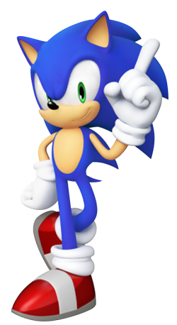
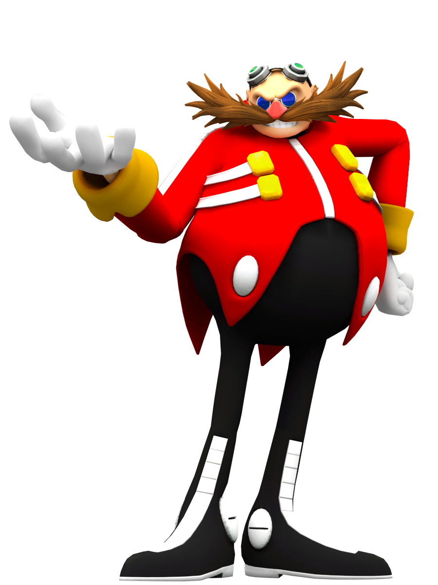
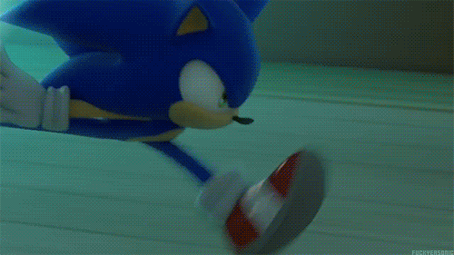
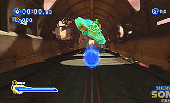

SONIC THE HEDGEHOG
Sonic the Hedgehog o Sonic el Erizo en español, es el protagonista principal de la serie Sonic the Hedgehog y la mascota de Sega. El es un erizo antropomórfico nacido con la habilidad de correr más rápido que el sonido, de ahí su nombre, también posee reflejos muy rápidos. Como es característico de su especie, Sonic puede enrollarse en una bola, principalmente para atacar a sus enemigos. Desde que entró en la batalla contra la injusticia, Sonic ha sido el vencedor de la paz y es reconocido en el mundo por haberlo salvado incontables veces.
Durante sus muchas aventuras, Sonic ha viajado desde los confines del mundo hasta los confines del espacio y del tiempo, enfrentando innumerables pruebas que lo han probado al máximo, ganándose muchos títulos, aliados y el desprecio de varios enemigos. Conocido por su legendaria actitud arrogante, tranquila y un temperamento algo corto, pero con un fuerte sentido de la justicia, la compasión y el amor por la libertad y la aventura, Sonic utiliza sus habilidades para proteger a los inocentes de su mundo y del más allá de las fuerzas del mal, especialmente de su archienemigo, el Dr. Eggman.HISTORIA
No se sabe mucho sobre la vida temprana de Sonic. Nació en Christmas Island con su habilidad anormal de correr a super velocidad, pero su amor por la aventura eventualmente lo llevo lejos de su casa.
Desde entonces, ha pasado su vida viajando por el mundo, impulsado por su espíritu inquieto, en busca de aventuras para satisfacer su sed de emociones. En algún momento, Sonic conoció al Dr. Ivo Robotnik y se convirtieron en enemigos. Sonic posteriormente peleará con Robotnik en un número incalculable de enfrentamientos mientras el científico intentaba una y otra vez conquistar el mundo, con Sonic frustrando los planes del doctor cada vez. A pesar de sus muchas batallas, Sonic realmente no lo cuenta como su adversario.
CONCEPTO Y CREACION
El artista Naoto Oshima, el programador Yuji Naka y el diseñador Hirokazu Yasuhara son los creadores del personaje de Sonic.
En abril de 1990, Sega pidio un juego capaz de vender más de un millón de copias y un personaje que pudiera competir contra la mascota de Nintendo, Super Mario, además de sustituir a Alex Kidd como mascota de la compañia.
Eventualmente, la mascota seleccionada fue la propuesta de Naoto Oshima, un puntiagudo erizo llamado Mr Needlemouse, luego renombrado Sonic.
El color de Sonic esta basado en el logo de Sega, sus zapatos en Michael Jackson, el color de sus zapatos en Santa Claus, y su personalidad en el futuro presidente de los Estados Unidos en ese momento, Bill Clinton.
De acuerdo con Yuji Naka, el color de Sonic simboliza la paz, la confianza y la frescura, que son los atributos del personaje.
APARIENCIA
Sonic es un erizo antropomórfico delgado con pelaje azul que cubre la mayor parte de su cuerpo y piel de melocoton sobre sus brazos, hocico y torsodelantero. Tiene seis puas largas en la parte posterior de la cabeza, dos espinas que sobresalen de la espalda detras de los hombros y una cola corta.
Anteriormente tenia una cabeza redonda y un torso igualmente redondo en su juventud, con ojos negros. Sin embargo, desarrollo ojos verdes a medida que envejecia. Sonic tambien era mas bajo y gordito. Sonic fue rediseñado por primera vez en el juego Sonic Adventure en 1998 y fue rediseñado por Yuji Uekawa como un erizo de 15 años de edad, el personaje era más alto con las piernas más largas y un cuerpo menos esférico, más largo, y su pelo era más largo, dos picos en la espalda, y ojos de color verde esmeralda. Sonic fue hecho a propósito un chico malo para el videojuego Sonic Adventure.
En los videojuegos Sonic the hedgehog (2006) y Sonic Unleashed cambiaron el diseño de Sonic añadiendo pelos visibles, un diseño más realista para un mundo humano, y haciéndolo un poco más delgado.
Para la vestimenta, Sonic usa dos zapatillas rojas livianas, resistentes a la hiper fricción, con puños blancos alrededor de los tobillos, suelas grises y correas blancas en la parte superior, las últimas se mantienen presionadas por una hebilla en cada pie. También usa un par de guantes blancos con puños en forma de calcetín en las manos.

PERSONALIDAD
Sonic se describe por ser igual al viento, una persona relajada, con espíritu libre y aventurero y que siempre se anda moviendo. Él considera a la libertad como parte de todo, viviendo su vida a su manera sin obedecer los estándares que se le presenten y lo que más disfruta es viajar por el mundo.
Por lo general Sonic suele tener una actitud tranquila y relajada. Aunque en ocasiones es muy impaciente, odia estar aburrido y tiene un corto temperamento. Debido a su naturaleza impulsiva, Sonic, puede llegar a ser imprudente y actuar antes de pensar, llevándose a si mismo hacia algún problema. A pesar de esto, él es honesto y siempre cumple sus promesas.
La personalidad de Sonic es una combinación entre amabilidad y ferocidad. El es extremadamente benevolente y firme acerca de la libertad pero él nunca es el único en descansar en la cara de la injusticia y la opresion. Él odia toda clase de maldad, llegando a ponerse muy enojado y hará todo lo posible para acabar con ella, incluso si esto significa sacrificar su propia vida para lograrlo. En tiempos de crisis, su personalidad tranquila suele cambiar a una muy agresiva y cuando se enfrenta a algo o alguien, se concentra intensamente en eso hasta derrotarlo.
Sonic tiene mucha confianza de sí mismo y posee un largo ego que lo marca, haciendo de el alguien atrevido, orgulloso y confiado de sus habilidades. No importa que tan grande sea el desafío, siempre se mantiene calmado. Él a menudo bromea de la forma de ser de los demás para encenderles su estado de ánimo, aunque esto lo hace más que todo para burlarse de sus oponentes. A pesar de eso, él cuando quiere puede ser también algo caballeroso y modesto. Siguiendo su naturaleza de libertad, Sonic jamás permite que las cosas malas o dolorosas que le han pasado antes lo afecten o lo detengan. En vez de eso, prefiere vivir el presente y siempre buscar una nueva aventura. Sonic también es increíblemente fuerte en lo que es voluntad: no importa la situación, él nunca se rendirá antes que el día sea salvado.

Sonic es extremadamente leal a sus amigos y arriesgará su vida por ellos sin dudarlo. Aunque en ocasiones suele reírse de ellos y les gasta bromas, Sonic nunca lo hace con la intención de lastimarlos o hacerlos sentir mal. Sonic siempre esta complaciente de ayudar a sus amigos y siempre les muestra que pueden confiar en él.
Sin importar la cantidad de oponentes que tiene, Sonic suele admirarlos por lo fuertes que son y por darle mucha diversión, como el Dr. Eggman.Del mismo modo, Sonic es reconocido por tener una remarcable capacidad por olvidar lo que los otros le hicieron antes.

A pesar de su conducta extrema, él es muy perspicaz de lo que él usualmente es, siendo capaz de hacer cambiar la forma de ser y de pensar de las personas que conoce.
Sonic también demostró tener gusto por la música, en especial por la música rock. Ademas de eso, es demostrado en Sonic Rush que Sonic disfruta el break dance, el cual se refleja en sus movimientos y proezas.
También tiende a irritarse cuando sus enemigos a menudo identifican erróneamente a su especie, es decir, llamándolo rata, lo que hace que los corrija y declare que su especie real es un erizo.
PODERES Y HABILIDADES
La mayor fortaleza de Sonic es su súper velocidad, un talento innato que poseen los miembros de la especie erizo. Sonic, sin embargo, se ha probado a sí mismo en una clase propia con su velocidad, habiéndose acreditado como el ser vivo más rápido e incluso el ser más rápido del universo. Tiene la capacidad de acelerar instantáneamente a la velocidad del sonido y correr a velocidades mucho mayores que el Mach 1, que está a la velocidad vertiginosa de aproximadamente 768 mph, y puede correr hacia atrás tan bien como puede avanzar. Debido a esa velocidad, puede escalar superficies verticales y techos, correr sobre el agua, sobrepasar los láseres e incluso hacer que el suelo explote a su paso. Incluso entonces, Sonic puede llevar su velocidad aún más lejos. Al acelerar en un lugar, puede despegar a velocidades turbo en un instante. También puede envolverse en un campo de energía azul que le permite acelerar más allá de la barrera del sonido en el suelo y en el aire por un corto tiempo, lo que le permite no solo atravesar directamente a los enemigos y obstáculos como un proyectil vivo, sino también volar inmenso distancias a través del aire. Usando ciertas técnicas, incluso puede alcanzar la velocidad de la luz momentáneamente.

Sonic ha demostrado un dominio completo de su velocidad en cualquier entorno y puede usarlo tanto para la ofensiva como para la defensa de alta velocidad. No solo puede correr con la inclinación máxima en líneas rectas, sino también en círculos cerrados y en curvas cerradas con control total sobre su impulso. En cuanto a la resistencia, Sonic es aparentemente ilimitado, ya que nunca se queda sin aliento para correr. Su velocidad también le permite realizar varias hazañas impresionantes: puede curarse a sí mismo haciendo vibrar su cuerpo, lanzar ondas de choque girando rápidamente, saltar en el aire, lanzar olas impresionantes con patadas rápidas, aumentar la fuerza de sus golpes golpeando con mayor impulso, y crear barreras de super velocidad. También puede girar en círculos o rotar sus extremidades a una velocidad súper alta para crear vientos lo suficientemente fuertes como para atacar o volar a los oponentes, similar a la aerokinesis.
Sonic posee una sorprendente cinética, precisión y tiene un tiempo de reacción para igualar su velocidad. Tiene profundas habilidades acrobáticas y agilidad, junto con reflejos mejorados que le permiten evitar cualquier obstáculo entrante con movimientos precisos y delicados. Cuando se lanza al aire, también puede realizar varios trucos antes de aterrizar. También tiene increíbles habilidades de salto, capaces de saltar hasta varios cientos de metros incluso con peso extra.
Sonic posee una fuerza mejorada, aunque se ha observado que carece de poder bruto general en comparación. Puede empujar y levantar cosas varias veces más grandes y pesadas que él mismo, correr con un peso extra disminuyendo la velocidad y sus ataques pueden aplastar metal y roca, y dañar a los enemigos innumerables veces su tamaño. Sin embargo, es discutible si el poder de este último proviene de su velocidad, fuerza o una combinación de ambos.
Sonic ha demostrado varias veces una resistencia extrema al daño. Puede sobrevivir al ser atrapado en el fuego cruzado desde todos los ángulos por los robots de Eggman que solo lo dejá inconsciente brevemente, resistir la fuerza de una explosión masiva y un agujero negro ileso, siendo golpeado con espadas, y aplastar varios robots con su puño sin molestias. Además, Sonic ha sobrevivido más de una vez a los impactos de caídas a alturas extremas, bordeando el borde del espacio, solo para sacudirse al aterrizar, e incluso ha resistido la entrada a la atmósfera.
Sonic posee un espíritu inquebrantable e incorruptible; en situaciones en las que la mayoría de los demás se rendirían y donde él está severamente superado en número y armas, Sonic nunca pierde la fe en sí mismo y nunca se rinde. Este rasgo le permite seguir luchando cuando está completamente agotado o después de recibir una cantidad anormal de daño.

La principal maniobra ofensiva de Sonic es el Spin Attack una técnica en la que se enrosca en una bola de conmoción o un disco de corte y se dirige a sus objetivos. Con él, Sonic puede triturar o excavar casi cualquier sustancia con suficiente velocidad y golpear con suficiente fuerza para perforar rocas colosales. Muy hábil en su uso, Sonic puede utilizar varias variantes del Spin Attack para maniobras tanto en tierra como aéreas, incluyendo el Spin Dash, el Spin Jump, el Homing Attack y el Super Focused Homing Attack.
Incluso sin su Spin Attack, Sonic es un hábil combatiente cuerpo a cuerpo. Principalmente confía en su juego de pies rápido ya que la mayor parte de su poder reside en sus piernas, aunque se sabe que también usa sus puños y brazos, aunque de una manera bastante directa. Su estilo de lucha se deriva principalmente de movimientos de breakdance que utilizan las piernas de Sonic al máximo, lo que le permite patadas rápidas y de amplio alcance. También se sabe que usa patadas voladoras hacia adelante, patadas divididas y patadas de tijera. Lo que Sonic carece de fuerza para el combate, lo compensa con la velocidad que usa para lanzar ataques rápidos en un corto tiempo. También se muestra que Sonic se destaca en la esgrima. Incluso como un espadachín novato, Sonic podrá vencer a un dragón y, después de recibir entrenamiento formal, podrá dominar a los espadachines como los Caballeros de la Mesa Redonda. Además de utilizar técnicas avanzadas, Sonic puede aplicar su velocidad a su juego de espadas para realizar cortes rápidos, y convertirse en una sierra circular girando con su espada, lo que le permite cortar a través de los enemigos. También ha aprendido el arte marcial de Linshao Kung Fu de Shuifon, aunque todavía no se lo ha visto usarlo.
Parece que Sonic puede controlar la fuerza y la durabilidad de sus picos de otra manera suaves a voluntad. Mientras esta en forma de bola, parecen ser extremadamente duros como cuchillas de sierra. Ademas, las puas de sonic pueden detectar peligros cercanos, de los cuales le advierten al crear una sensacion de hormigueo.
VIDEOJUEGOS
| VIDEOJUEGO | AÑO DE LANZAMIENTO |
| SONIC THE HEDGEHOG | 1991 |
| SONIC ERASER | 1991 |
| SONIC THE HEDGEHOG 2 | 1992 |
| SEGASONIC THE HEDGEHOG | 1993 |
| SONIC THE HEDGEHOG CD | 1993 |
| SONIC CHAOS | 1993 |
| SONIC THE HEDGEHOG SPINBALL | 1993 |
| SONIC THE HEDGEHOG 3 | 1994 |
| SONIC DRIFT | 1994 |
| SONIC THE HEDGEHOG'S GAMEWORLD | 1994 |
| SONIC AND KNUCKLES | 1994 |
| SONIC THE HEDGEHOG TRIPLE TROUBLE | 1994 |
| SONIC DRIFT 2 | 1995 |
| SONIC LABYRINTH | 1995 |
| SONIC THE FIGHTERS | 1996 |
| SONIC 3D BLAST | 1996 |
| SONIC BLAST | 1996 |
| SONIC'S SCHOOLHOUSE | 1996 |
| SONIC R | 1997 |
| SONIC ADVENTURE | 1998 |
| SONIC THE HEDGEHOG POCKET ADVENTURE | 2000 |
| SONIC SHUFFLE | 200O |
| SONIC ADVENTURE 2 | 2001 |
| SONIC ADVENTURE 2: BATTLE | 2002 |
| SONIC ADVANCE | 2001 |
| SONIC ADVANCE 2 | 2002 |
| SONIC PINBALL PARTY | 2003 |
| SONIC ADVENTURE DX: DIRECTOR'S CUT | 2003 |
| SONIC BATTLE | 2003 |
| SONIC HEROES | 2003 |
| SONIC ADVANCE 3 | 2004 |
| SONIC JUMP | 2005 |
| SONIC RUSH | 2005 |
| SONIC RIDERS | 2006 |
| SONIC THE HEDGEHOG | 2006 |
| SONIC RIVALS | 2006 |
| SONIC AND THE SECRET RINGS | 2007 |
| SONIC RUSH ADVENTURE | 2007 |
| SONIC RIVALS 2 | 2007 |
| SONIC RIDERS: ZERO GRAVITY | 2008 |
| SONIC CHRONICLES: THE DARK BROTHERHOOD | 2008 |
| SONIC UNLEASHED | 2008 |
| SONIC AND THE BLACK KNIGHT | 2009 |
| SONIC THE HEDGEHOG 4 EPISODE I | 2010 |
| SONIC FREE RIDERS | 2010 |
| SONIC COLORS | 2010 |
| SONIC GENERATIONS | 2011 |
| SONIC THE HEDGEHOG 4 EPISODE II | 2012 |
| SONIC THE HEDGEHOG 4 EPISODE METAL | 2012 |
| SONIC JUMP | 2012 |
| SONIC DASH | 2013 |
| SONIC LOST WORLD | 2013 |
| SONIC JUMP FEVER | 2014 |
| SONIC BOOM: RISE OF LYRIC | 2014 |
| SONIC BOOM: SHATTERED CRYSTAL | 2014 |
| SONIC DASH 2: SONIC BOOM | 2015 |
| SONIC RUNNERS | 2015 |
| SONIC BOOM FIRE AND ICE | 2016 |
| SONIC FORCES: SPEED BATTLE | 2017 |
| SONIC FORCES | 2017 |
| TEAM SONIC RACING | 2019 |
En el siguiente video se muestran imagenes de todos los videojuegos de sonic escritos en la tabla anterior.